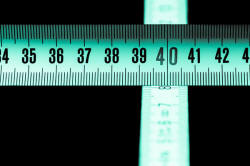

Unit 1: Pronunciation

There are 5 sections to this unit:
Here's the menu.
Clicking on the yellow arrow at the end of each section will return you
to this menu.
| Section | Looking at: |
| A | What is a phoneme? How we decide which are the most important sounds and a little about how we write them. |
| B | Consonants The first major class of sounds, how they are made and what they do. |
| C | Vowels The second major class of sounds, how they are made and what they do. |
| D | Connected speech What happens to sounds when we speak at a normal speed. |
| E | Intonation How the tone of our voices varies and what it means. |
Section A: What is a phoneme?
 |
The sounds of English: phonemes, allophones and minimal pairs |
In what follows, you will see that certain letters appear between
two diagonal lines, like this: /b/. The diagonal lines are the
conventional way to show that we are talking about the sound, not
the letter itself.
For example, the first letters of cinema and cave
are the same, a 'c', but the sound they represent is different.
In cinema, it is an /s/ and in cave it is a /k/
sound.
A phoneme is, essentially, a sound but the critical point is that it is a sound which carries meaning.
The first thing to be aware of is that we are talking about English sounds. The study of language sounds (phonemic analysis) is language specific.
- Phonemes:
-
In English, we make a difference between the words pat
and bat simply by changing the 'p' to a 'b' sound.
This is because the sounds /p/ and /b/ in English are phonemes.
Selecting one sound or another will make a difference to the
meaning of the noise you make when you say a word.
If you change a single sound in a word and make a new word, the sound you have changed is a phoneme in that language.
In other languages, most varieties of Arabic, for example, these two sounds are not phonemes and changing one to the other will not change the meaning of a word (but it might sound odd). - Allophones:
- Allophones are slightly different pronunciations of certain phonemes
which do not affect the meaning of what is said (although it may sound
odd). We saw above that /p/ and /b/ are allophones in most
varieties of Arabic as are, incidentally, /f/ and /v/ in some
varieties.
All languages have a number of allophones. For example, in English the sound /t/ can be pronounced with and without a following /h/ sound. Compare the sounds in track and tack.
If you hold a thin piece of paper in front of your mouth and say tack loudly, the paper will move.
If you do the same with the word track, the paper won't (or shouldn't) move (unless you shout).
In English, these two ways to say the letter 't' are not phonemes because you can change from one to the other without changing the meaning of the word.
In some languages, Mandarin, for example, the two ways to say 't' are separate phonemes and swapping them around will change the meaning of what you say. - Minimal pairs:
- Pairs of words which are distinguished only by a change in one
phoneme in the same place in the word are called minimal pairs. For example, hit-hat,
kick-sick, fit-bit, sheep-ship, jerk-dirk, hot-cot, love-live
etc. are all distinguished in meaning by a single change to one
sound. That's in English, of course. It bears
repeating that what is an allophone in English may be a phoneme in
other languages and vice versa.
There is a list on this site of commonly used minimal pairs for classroom practice. Click here to get it.
British English phonemes |
We are talking about one standard variety of English only here. Other standards, US, Caribbean, Australian etc., will have slightly different sets of phonemes. That is how accents are often recognised.
There are two fundamental sorts of phonemes in any language.
|
Consonants are made by blocking or partially blocking the air flow. |
Vowels are made by expelling air through your mouth with the tongue in various positions. |
|
|
If you read the lists above out loud, you have pronounced all the phonemes in English at least three times each.
Purely for your reference, here is a list of the representation
of all the phonemes in English with a few notes. Sooner or
later, you will have to learn to use the symbols.

If you want this chart as a PDF document,
click here.
 |
Learn moreThese links take you away from the course and connect to
guides elsewhere on the site. |
 |
Take a test |
To make sure you have understood so far, try
a test of your
knowledge of phonemes.
Use the 'Back' button to return when you have done that.

Section B: Consonants
 |
The consonant sounds of English |
| Ssshhh! |
Now that you know what a phoneme actually is, we can look at the
first main category: consonants. Consonants are the hard
sounds of English. If we only have the consonants in a phrase
we can still understand the phrase because the consonant sounds
carry the most meaning.
For example, try to understand this:
r y cmng t th prty?
If we put the other letters back, we get: Are you coming to
the party?
Because the consonant sounds are those which carry the most
meaning, txt msgs r snt that way.
When you produce a sound by completely or partially blocking the air flow, you produce a consonant. For example, if you block and then release air through pressing your lips together, you will produce the sound /p/. Leave your lips open and you simply make an 'ee' sound, if you make any sound at all.
In English, 21 letters of the alphabet represent consonants: B, C, D,
F, G, H, J, K, L, M, N, P, Q, R, S, T, V, X, Z, and usually W and Y.
However, English spelling is not a good guide to English
pronunciation and there are, in fact, 24 consonant sounds. If
you take
the
course in transcribing sounds on this site (new tab), you will discover
what they all are. For now, we need to look at two ways to
pronounce consonants.
Letters and sounds are not the same thing.
For example, in the word letting in English there are only
three consonant sounds (l, tt and ng) although
there are five consonant letters (l, t, t, n and
g).
The sounds made by those consonants are transcribed as /l/, /t/ and /ŋ/
so the whole word is transcribed (i.e., written down) as /ˈlet.ɪŋ/.
 |
Voiced and unvoiced consonants |
Put your hand on your throat and say this:
SSSSSSSSSSSSSSZZZZZZZZZZZZZZZZZZZSSSSSSSSSSSSSSSSSSSSZZZZZZZZZZZZZZZZ
What did you feel? Try again and then
click
 here when you have an answer.
here when you have an answer.
When you said SSSSSSSSSSSSS, you probably felt nothing but when you said ZZZZZZZZZZZZZZZ, you felt your throat vibrate. If you didn't, try again.
The difference is the sound represented by Z is voiced and the sound represented by S is unvoiced. Now try saying this and think about where your tongue is in your mouth.
sue zoo sue zoo sue zoo sue zoo sue zoo sue zoo sue zoo sue zoo sue zoo sue
Click
 when you have done that.
when you have done that.
You can
hear the different sounds of the 's' and the 'z' but notice that
your tongue stays in the same place for both sounds. The only
difference is that with zoo you add your
voice and with sue, you don't.
The words are minimal pairs in English, distinguished by voicing
alone.
There are some pairs of voiced and unvoiced consonants in
English in this list. Can you identify which ones are voiced
and which ones are unvoiced? Try the hand-on-throat trick.
Click on the table when you have your answer.

In English, whether a sound is voiced or unvoiced is very important because, as you can see, the act of adding voice to a consonant makes it change its significance. Voicing and not voicing are phonemic differences in English but not so in many other languages.
Here is a list of all the consonant sounds in English with examples and their transcriptions:
| /p/ | peach open supper |
/b/ | bang cupboard cab |
/t/ | top pat hotter |
| /d/ | do added made |
/k/ | cough cake pack |
/ɡ/ | good beg lagged |
| /tʃ/ | chair patch attach |
/dʒ/ | jumper hedge badger |
/f/ | food phase defer |
| /v/ | value cover love |
/θ/ | path think cloth |
/ð/ | the thin brother |
| /s/ | sack hiss cider |
/z/ | zoo closed passes |
/ʃ/ | sugar passion notion |
| /ʒ/ | leisure rouge genre |
/h/ | happy behave hope |
/m/ | man come demand |
| /n/ | nice money can |
/ŋ/ | ring singing bang |
/l/ | love lull pillar |
| /r/ | roll hurry barred |
/j/ | yacht yank yard |
/w/ | war will way |
As you can see, for the consonant sounds in English, most of the sounds are written using the normal letters of the alphabet. There are, however, a few symbols which are used to describe some sounds. They are:
- /ʃ/ which is the symbol for the first sound in she and often represented in writing by the letters sh. This sound combines with /t/ to make the harder sound represented by ch at the beginning of chair and that has the symbol /tʃ/ to represent it.
- /ʒ/ is the symbol for the sound at the beginning of genre and gendarme (both borrowed from French). In English words it most frequently occurs in the middle of words such as leisure, measure, pleasure etc. This sound combines with /d/ to make the sound we have twice in the word judge and that has the symbol /dʒ/ to represent it.
- /θ/ and /ð/ are usually represented in English by the letters th but the distinction is that the first is unvoiced, as in thank and the second is voiced, as in this.
- /ŋ/ is the sound we hear at the end of sing and it is usually represented by the letters ng. It never occurs in English at the beginning of words but it can occur at the end of a syllable in the middle of a word like singer.
- The last sound looks like a letter in English /j/ but is not pronounced as at the beginning of January. It is often represented by the y at the beginning of yet, yacht, yes etc.
- Lastly, you should be aware that the sound of the letter g at the beginning of go or at the end of dog is represented as /ɡ/ not /g/.
|
|
Learn moreThese links take you away from the course and connect to
guides elsewhere on the site. |
|
|
Take a test |
To make sure you have understood so far, try
a test of your
knowledge of consonants.
Use the 'Back' button to return when you have done that.

Section C: Vowels
 |
The 'soft' sounds of English |
Now that you know what a phoneme is and have discovered
something about consonants, we can look at the
second main category: vowels. Vowels are the soft
sounds of English. If we only have the vowels in a phrase
we cannot usually understand it because the vowels alone
carry little meaning.
For example, try to understand this:
ae ou oi o e ay
If we put the consonants back, we get the more familiar:
Are you coming to
the party?
Vowels can, however, form minimal pairs as in, for example:
hare and here
hot and hat
put and putt
and so on so they are not without meaning in themselves.
When you produce a sound by completely or partially blocking the
air flow, you produce a consonant. If you allow the air to
flow freely, you produce a vowel.
For example, if you partially block the air flow between your tongue
and teeth and say the word zoo you can
hear that there is a voiced consonant sound at the beginning (z).
Now take away the 'z' sound and you are left with the vowel 'oo'.
Traditionally, there are 5 vowel letters in English: A, E, I, O, U but we can add Y and W to the list sometimes. Unfortunately, there are 21 vowel sounds. We need, therefore, to have a number of symbols to represent the sounds and if you do the course in transcription on this site (new tab), you will discover them all. Here, we will focus only on what vowels are and how we make them.
We saw above that the air flow is not restricted when making vowel sounds. The nature of the vowel depends on four factors:
- Tongue height (whether the tongue lies on the floor of the mouth, is near the roof or half-way up)
- Tongue position (whether the tongue is at the back, in the middle or at the front of the mouth)
- Lip rounding (whether the lips are rounded or not)
- Vowel length (how long the sound is)
Tongue height and position are quite technical areas and there is a guide on this site which explains them. Here, we will focus on lip rounding and length because they are the most important and easiest to teach.
Lip rounding |
If you are pleasantly surprised and say
Oooh, that's nice!
you will have rounded your lips nicely. If, you are
unpleasantly surprised and say
Eeek!
you will have pulled your lips
horizontally. That's the effect of lip rounding vs. lip
stretching.
Get a mirror, look in it and try saying Oooh! Eeek! a few
times and you will see what's meant.
The sounds you have made are transcribed as /uː/ and /iː/.
|  |
Vowel length |
Try saying these two words:
bid
bead
What difference do you notice with the vowel sound?
Click
 when you have an answer.
when you have an answer.
When you said bid the sound was short. When you said
bead, the sound was much longer (and you probably stretched
your lips sideways slightly). That, of course, is why people are asked
to say cheese when posing for a photograph.
This difference in vowel length alone makes bid and
bead a
minimal pair.
In English, whether a sound is made with rounded lips or not and
whether it is short or long makes a real difference to the meaning
that is expressed.
The sounds you made when you said the two words are transcribed as
/ɪ/ and /iː/ and you can see that the second of these has the symbol
'ː' following it. It is called a length mark and also appeared
in the transcription of the vowels in Oooh and Eeek
that we had above.
 |
Two kinds of vowels |
Apart from issues of length, lip rounding and tongue position, we need to consider two other vowel characteristics. (In what follows, the transcription is provided but ignore it if you want to.)
- Pure vowels. There are 13 of these:
- The long sound in the centre of, e.g., cheese, sheep, leak, cheat etc. This is the sound you made above when you said Eeek! It is transcribed as /iː/.
- The short sound that you made when you said bid which also occurs in trip, lip, kid, slid etc. It is transcribed as /ɪ/.
- The short, lip rounded sound that occurs in put, foot, loot, shoot etc. It is transcribed as /ʊ/.
- The longer, lip rounded sound that occurs in noose, loose, shrew, clue etc. It is transcribed as /uː/.
- The short sound that occurs in dead, said, Med, led etc. It is transcribed as /e/.
- The very short sound that occurs in
about,
alive, father,
shovel etc.
It is transcribed as /ə/. If you learn to
transcribe nothing else, learn this one. The
vowel is the commonest in English (although there is no
letter to represent it) and many words, when said
quickly, use the sound. For example,
He was at the cinema
contains 5 of these sounds (underlined). This sound is called the schwa. - The long sound that you say with rounded lips in hearse, verse, nurse, search etc. It is transcribed as /ɜː/.
- The long sound that you say with rounded lips in caught, bought, sought, war, tore etc. It is transcribed as /ɔː/.
- The short sound in chat, fat, mat, lap etc. This is transcribed as /æ/.
- The short sound in blood, nub, cud, shut etc. This is transcribed as /ʌ/.
- The long sound in part, heart, dance, chant etc. This is transcribed as /ɑː/.
- The short sound you say with rounded lips in hot, shot, lot, what etc. This is transcribed as /ɒ/.
- The short sound that comes at the end of words such as happy, plenty, carry, marry etc. This is transcribed as /i/. It is formed similarly to the long sound in bead, seed, she'd etc. but it is shorter.
- Diphthongs. There are 8 of these. The sounds are
all combinations of pure vowels and if you do more in this
area, you will learn how to transcribe them. Here, an
example will do.
The sound you make in the middle of the word day is a combination of two of the pure vowels above:- the short /e/ sound in Fred, bed, head etc., plus
- the short /ɪ/ sound in bin, sin, din etc.
Put them together and you get the sound in day, say, lay, betray, decay, may etc. which is transcribed as /eɪ/.
Say the words very slowly and you will hear the sound start with one vowel and glide into the other.
| /iː/ | sleep sheep free |
/æ/ | sat hat flab |
/ɪə/ | here beer mere |
| /ɪ/ | kid slid blip |
/ʌ/ | blood cup shut |
*/ʊə/ | during furious pure |
| /ʊ/ | put foot wolf |
/ɑː/ | part large heart |
/ɔɪ/ | boy deploy toy |
| /uː/ | goose loose Bruce |
/ɒ/ | hot cot shod |
/eə/ | lair share fair |
| /e/ | Fred dead said |
†/i/ | happy navvy sally |
/eɪ/ | lace day tray |
| ‡/ə/ | about father across |
/aɪ/ | price wine shine |
||
| /ɜː/ | verse hearse curse |
/əʊ/ | boat coat note |
||
| /ɔː/ | fought caught brought |
/aʊ/ | south house louse |
||
* This diphthong in the example words is not pronounced by all
speakers. For example, sure may be pronounced with
the diphthong as /ʃʊə/ or with a monophthong as /ʃɔː/. The
sound is produced more frequently in longer words such as
individual.
† /i/ may be transcribed as /iː/ in some analyses.
‡ this is the most common sound in English but there is no letter to
represent it. It is called a schwa and is represented as /ə/.
If you would like a chart of all the English phonemes, vowels and consonants, click here.
|
|
Learn moreThese links take you away from the course and connect to
guides elsewhere on the site. |
|
|
Take a test |
To make sure you have understood so far, try
a test of your
knowledge of vowels.
Use the 'Back' button to return when you have done that.

Section D: Connected speech
 |
How sounds change when we speak |
This is a complicated area and what follows is not at all complete. There are links at the end for guides with more detail.
So far, we have mostly been talking about single sounds or single words
but when any language is spoken at a normal speed (rather than, for
example, reading out single words carefully), then the sounds often
change.
If learners don't recognise the changes, they may find it difficult to
understand what they hear and if they can't produce the changes, they
will often sound unnatural and stiff.
 |
Contracted forms |
English is unusual, but not unique, in having a wide range of
contracted forms so, for example:
She would have been to the cinema
is, in speech and informal writing, rendered as
She'd've'been to the cinema
Less extremely, I am is contracted to I'm, we have
to we've and so on.
Here's a list of the common contracted forms in English.
| Full form | Contracted | Full form | Contracted | Full form | Contracted | Full form | Contracted |
| I am | I'm | I have | I've | I had / would | I'd | let us | let's |
| you are | you're | you have | you've | you had / would | you'd | not | n't |
| he is | he's | he has | he's | he had / would | he'd | will / shall | 'll |
| she is | she's | she has | she's | she had / would | she'd | do | d' |
| it is | it's | it has | it's | it had / would | it'd | does | 's |
| we are | we're | we have | we've | we had / would | we'd | about | 'bout |
| they are | they're | they have | they've | they had / would | they'd | of the | o' |
 |
Weak forms |
Do you remember the schwa (/ə/)?
This sound occurs in many words when they are in a connected stream but
not when they stand alone.
For example, the word for (which alone sounds just like the word
four)
usually contains a schwa when it occurs in speech and is a very short /fə/
sound. The word four does not do that.
Try saying
I bought four for you
and you will hear what's meant.
It is transcribed as /ˈaɪ.ˈbɔːt.fɔː.fə.ju/ and you can refer to the
chart above to see how that happens.
This is called the weak form of the vowel. Here are some other
examples:
- The word been is often pronounced as bin in rapid speech so /biːn/ changes to /bɪn/.
- The word and is often pronounced 'n' in rapid speech as in fish 'n' chips and the letter d is often not sounded at all so we get /fɪʃ.ən.tʃɪps/.
- The word of is usually pronounced /əv/ in rapid speech. The /v/ sound can also be dropped as in a cuppa coffee.
- The words too, two and to are differently
pronounced in rapid speech:
two and too are pronounced in their full form as /tuː/ but to is often weakened to /tə/. Try saying:
Two friends went to London and I did too.
That's transcribed as /ˈtuː.frendz.ˈwent.tə.ˈlʌn.dən.ənd.ˈaɪ.dɪd.tuː/ in which you can see the different pronunciations of to, two and too and notice how and is pronounced (as /ənd/).
There's a list of common weak forms on this site.
 |
Where words meet |
At the borders between words a number of things can happen:
- sounds can change. For example:
- if you say
when possible
quickly, the 'n' at the end of when can sound like a 'm' because your lips are already moving to make the sound of 'p'.
- if you say
- sounds can move. For example:
- when you say
an apple
quickly, it can sound like
a napple.
- when you say
- sounds can disappear. For example:
- when you say
a clothes line
quickly, it usually sounds like
a close line.
- when you say
- sounds can appear. For example:
- when you say
law and order
quickly, it sounds like there is a 'r' sound before the word and.
- when you say
For more in this area, go to the in-service guide to connected speech linked below.
|
|
Learn moreThese links take you away from the course and connect to
guides elsewhere on the site. |
|
|
Take a test |
To make sure you have understood so far, try
a test of your
knowledge of connected speech.
Use the 'Back' button to return when you have done that.

Section E: Intonation
 |
Intonation refers, among other things, to the way
the pitch and volume of the voice falls and rises across a sentence.
Intonation is another quite technical area so this, too, will be
brief.
Here's a very short guide:
| 1 |
|
Flat: neutral tone showing little emotion; it may sound rude or uninterested |
| 2 |
|
Falling tone: showing a positive response |
| 3 |
|
Rising tone: indicating slight surprise or a query: Why do you ask? |
| 4 | Sharply rising tone: indicating astonishment that someone should ask | |
| 5 |
|
Rising tone followed by falling tone: indicating doubt: I may come |
| 6 |
|
Falling tone followed by rising tone: indicating something like: Carry on. I'm interested to know why you ask. |
You can try it for yourself by putting all six intonation patterns on the six responses here:
- Are you coming to the party?
-
- I can do (flat and neutral showing boredom)
- Yes, of course (falling tone, showing positive response)
- Of course! (rising tone indicating slight surprise)
- Of course! It was my idea! (sharply rising tone indicating great surprise)
- I don't know. I might be back from France in time (rising followed by falling to show doubt)
- Well, it's an idea, I guess (falling followed by rising to show curiosity)
We need to be a little cautious here because the connection between intonation and the feelings of a speaker are not always so predictable. What we have said above is, therefore, a rule of thumb, not a rule.
|
|
Learn moreThese links take you away from the course and connect to
guides elsewhere on the site. |
|
|
Take a test |
To make sure you have understood so far, try
a test of your
knowledge of intonation.
Use the 'Back' button to return when you have done that.